Architecting for ReliabilityEliminating Hidden Failure ModesBarry S. StahlPrincipal Engineer - AZNerds.net@bsstahl@cognitiveinheritance.comhttps://CognitiveInheritance.com |

|
Favorite Physicists & Mathematicians
Favorite Physicists
Other notables: Stephen Hawking, Edwin Hubble, Leonard Susskind, Christiaan Huygens |
Favorite Mathematicians
Other notables: Blaise Pascal, Daphne Koller, Grady Booch, Evelyn Berezin, Pascal Van Hentenryck |
Fediverse Supporter
|
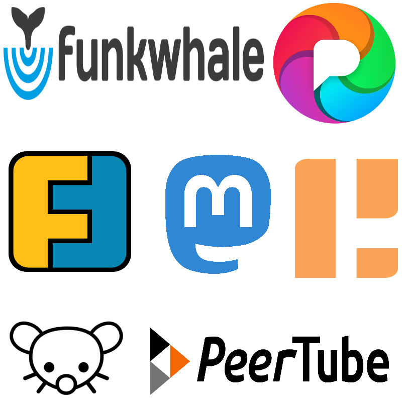 |
Some OSS Projects I Run
- Liquid Victor : Media tracking and aggregation [used to assemble this presentation]
- Prehensile Pony-Tail : A static site generator built in c#
- TestHelperExtensions : A set of extension methods helpful when building unit tests
- Conference Scheduler : A conference schedule optimizer
- IntentBot : A microservices framework for creating conversational bots on top of Bot Framework
- LiquidNun : Library of abstractions and implementations for loosely-coupled applications
- Toastmasters Agenda : A c# library and website for generating agenda's for Toastmasters meetings
- ProtoBuf Data Mapper : A c# library for mapping and transforming ProtoBuf messages
http://GiveCamp.org

Achievement Unlocked
Simple Example
Two Actions that Result in Changes
- A - Send an eMail Message
- B - Write the results to a DB
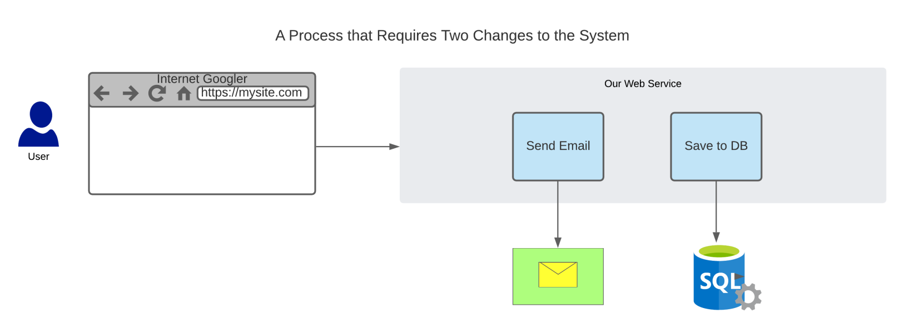
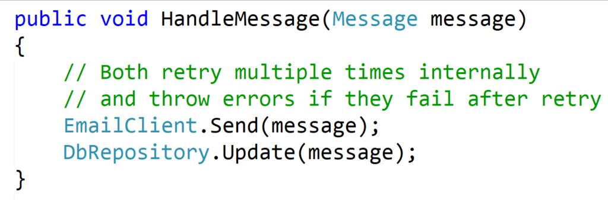
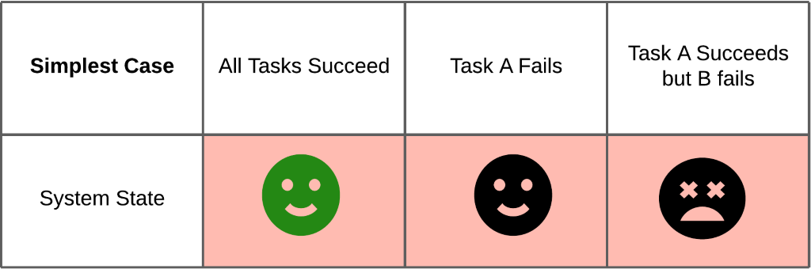
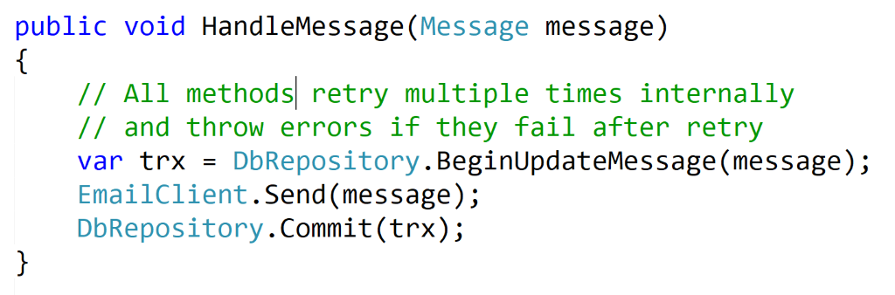
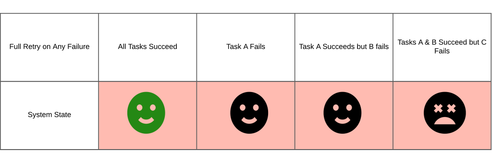
Retry at the Client
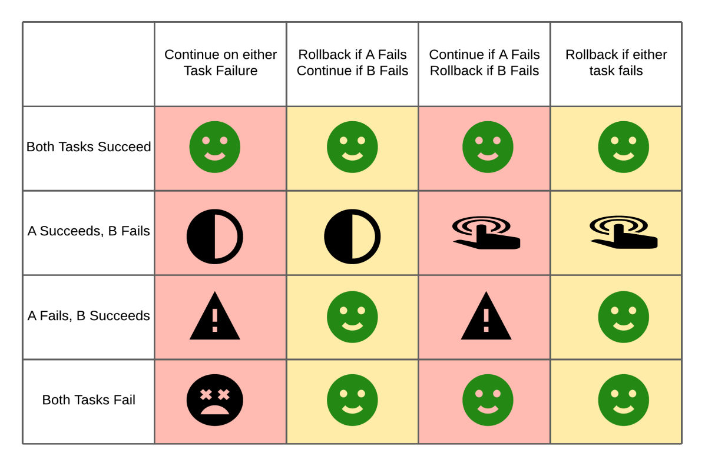
Two At-A-Time
Two changes can be made to system state in a single execution context if:
|
Idempotence
[ īdemˈpōt(ə)nce , ˈēdemˌpōt(ə)nce ]
The ability to execute a task an arbitrary number of times (>1) and have the resulting state of the system be the same as if the task was executed once.
What is a Dual-Write?
|
|
Particularly Pernicious
|
|
Avoiding Dual-Writes
Keep It Separate, Keep It Safe
- Isolation Patterns
- Transactional Outbox
- Change-Data-Capture
- Data Streaming
- Coordination Patterns
- Saga Orchestration
- Saga Choreography
Isolation Patterns
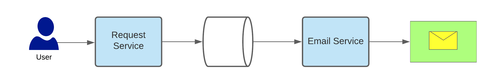
Transactional Outbox
Goal: Reliably update a Data Store and trigger an additional action
- A single atomic write that makes two updates
- A change to the state stored in the DB
- A command to execute a secondary process
Transactional Outbox Sequence
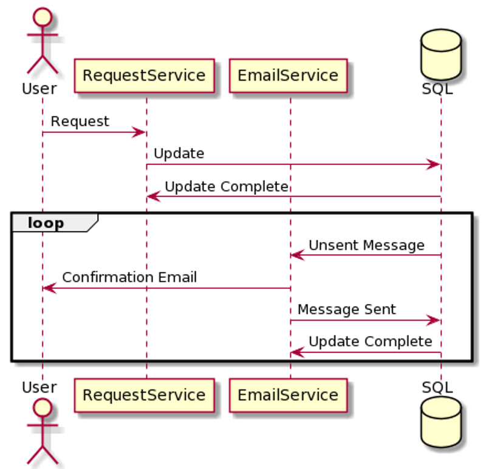
Demo
The Transactional Outbox Pattern
Outbox Pattern
Advantages
- Persist quickly
- Captures every update
- Uses familiar tech
Disadvantages
- Hard to scale
- Harder to fanout than other patterns
- Uses DB as a queue
- Adds weight to the persistance (trx)
- Still susceptible to errors on commit
Change-Data-Capture
Goal: Reliably update a Data Store and trigger an additional action
- A single atomic write that makes one update to the DB
- The DB log is used to trigger the secondary action
CDC Sequence
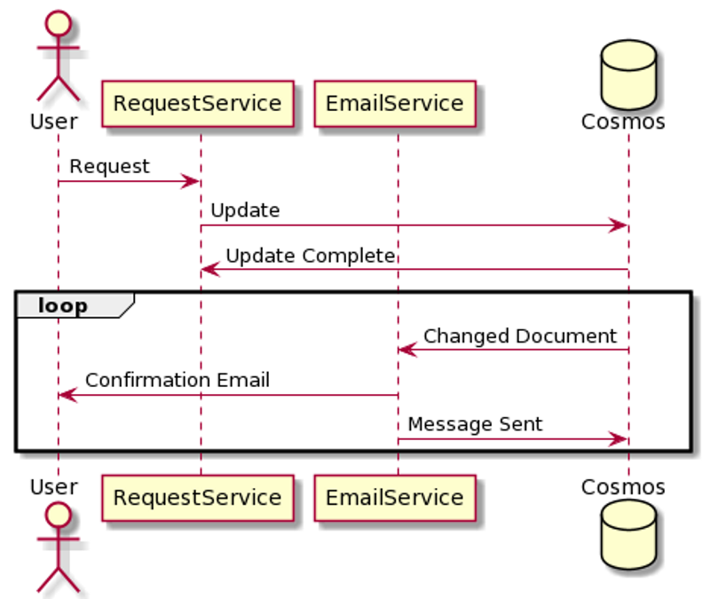
Demo
The Change-Data-Capture Pattern
Cosmos CDC
Advantages
- Persist quickly
- Easy to scale
- Easy to fanout
Disadvantages
- Not guaranteed to capture every update
- Still susceptible to errors on commit
Data Streaming
Goal: Reliably persist a message and trigger additional actions
- A single atomic write that makes one update to the message stream
- The stream is used to trigger all actions
Streaming Data Sequence
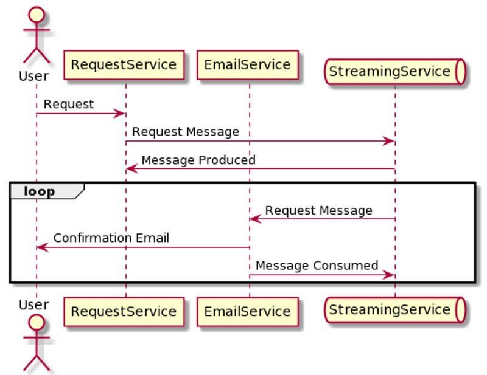
Demo
Data Streaming
Data Streaming
Advantages
- Persist quickly
- Easy to scale
- Easy to fanout
- Captures every update
Disadvantages
- Reliability is subject to persistance of the implementation
- Still susceptible to errors on commit
These Patterns are Similar
- Persist the data first - Then act on it
- CDC & Streaming are easy to fanout to N tasks
- Outbox & Streaming guarantee that all changes will be sent
- All are susceptible to errors on commit
Avoiding Commit Errors
- These patterns get very close to 4-9's
- Use Idempotence whenever possible
- Exactly-Once Delivery may be possible
The Saga Pattern
Goal: Trigger an orchestration or Choreography to perform multiple actions reliably
Orchestration
- A single controller is responsible for triggering all actions, including reversing transactions in the event of failures.
Choreography
- Each service does one thing based on upstream events, then publishes events as needed. Any other services in the saga are responsible for responding to all events appropriately.
Saga Orchestration
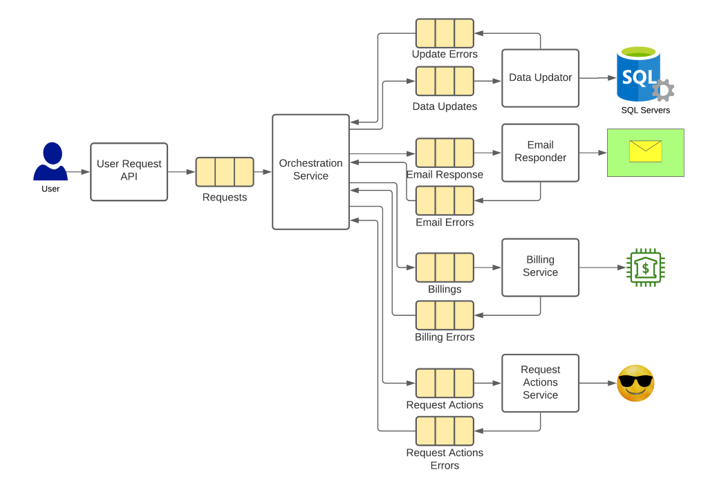
My Ideal Architecture
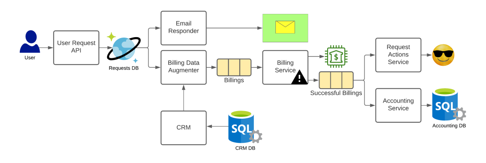
Most Important Takeaway
Never "add on" inside an execution context
Summary
- It is impossible to reliable take 2 actions in a single context
- Best practice: Persist immediately, then take other actions
- Use Outbox, CDC or Streaming to keep operations separate
- Prefer CDC or Streaming for best fanout and scalability
- Consider Sagas to orchestrate or choreograph complex interactions reliably
- Never "add on"
Resources
This Slide Deck
http://AvoidingDualWrites.azurewebsites.net
Appendix A - Uptime Metrics
3-9's (unimportant)
- 99.9% uptime
- 1 outage second in 1000
- ~ 43 min / month
4-9's (important)
- 99.99% uptime
- 1 outage second in 10,000
- ~ 4.3 min / month
5-9's (critical)
- 99.999% uptime
- 1 outage second in 100,000
- ~ 0.43 min (26 sec) / month
Appendix B - Delivery Guarantees
At-Least Once
- Every messages will be delivered 1+ times
- The vast majority of message systems make this guarantee
At-Most once
- Every message will be delivered 0-1 times
- i.e. Logging
Exactly once
- Every message will be delivered 1 and only 1 time
- Very difficult and expensive
- Limited usefulness while maintaining this guarantee
- Combination of idempotent input and a downstream transaction